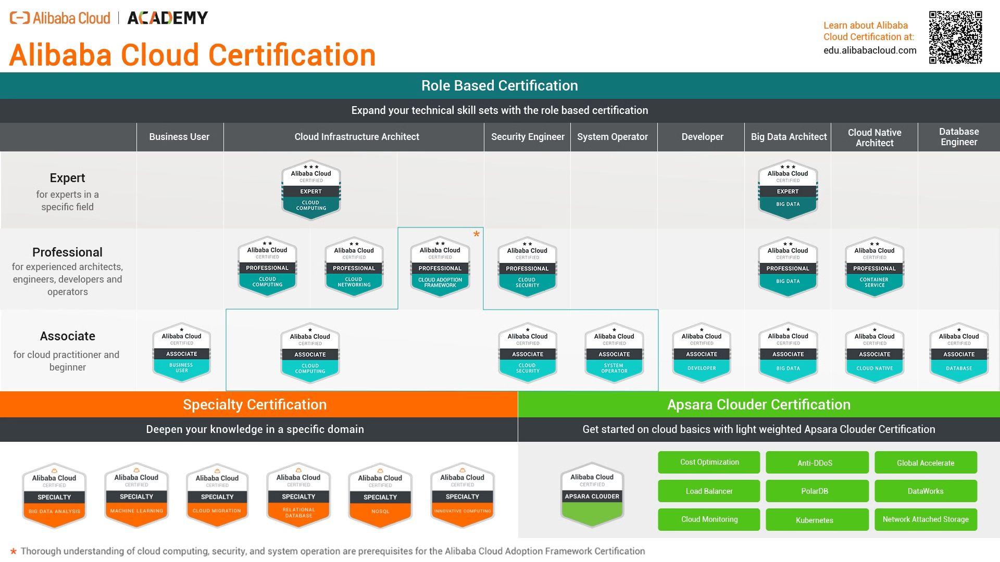

Alibaba Cloud Academy
Alibaba Cloud Academy cung cấp một loạt các khóa đào tạo để giúp bạn tìm hiểu về các sản phẩm và giải pháp của Alibaba Cloud.

Alibaba Cloud Academy Certification là chương trình đào tạo được cung cấp bởi Alibaba Cloud, cánh tay công nghệ nối dài của tập đoàn Alibaba Group trứ danh. Nó được thiết kế để xác nhận những cá nhân có đủ các kỹ năng và kiến thức cần thiết để làm việc với các sản phẩm và dịch vụ của Alibaba Cloud.
Hiện tại, có 3 loại chứng chỉ Alibaba Cloud Academy, được phân theo 3 hình thức: Role-based (theo vị trí), Specialty (chuyên biệt) và Apsara Clouder (phát triển ứng dụng trên Apsara). Bài viết này sẽ tập trung giới thiệu về các chứng chỉ Role-based, cũng là các chứng chỉ quan trọng và phổ biến nhất của hệ thống chứng chỉ này.
Chương trình chứng chỉ Alibaba Cloud Academy bao quát mọi khía cạnh của điện toán đám mây, bao gồm cơ sở hạ tầng, dữ liệu lớn (big data), bảo mật, mạng máy tính, trí tuệ nhân tạo, và hơn thế nữa. Những chứng chỉ này được phân thành 3 mức độ: Associate, Professional và Expert, đại diện cho các cấp độ chuyên môn và các kỹ năng chuyên biệt.
Những phân loại chứng chỉ của Alibaba Cloud
Bên cạnh đó, các chứng chỉ của Alibaba Cloud Academy còn được phân loại theo vai trò, theo chuyên môn, và có một hệ thống chứng chỉ độc lập cho các clouder sử dụng Apsara. Các chứng chỉ chia theo vai trò bao gồm:
Business User (Người dùng thông thường)
-
Đây là chứng chỉ dành cho người dùng thông thường và chưa biết về các hệ thống đám mây. Chứng chỉ này cung cấp các khái niệm cơ bản nhất, tổng quan nhất về các khái niệm điện toán đám mây.
-
Các sản phẩm Alibaba Cloud liên quan: tất cả sản phẩm
Cloud Infrastructure Architect (Kiến trúc hạ tầng đám mây)
-
Dành cho những người đảm nhiệm các vai trò như DevOps hoặc Solution Architect, nhằm đảm bảo việc sử dụng, vận hành, và bảo trì các hệ thống nên nền tảng điện toán đám mây.
-
Các sản phẩm Alibaba Cloud liên quan: ECS, SLB, OSS, RDS, VPS, Auto Scaling, Security Solution.
Security Engineer (Kỹ sư bảo mật)
-
Dành cho các chuyên gia bảo mật để làm quen và sử dụng thành thạo các công cụ bảo mật như Server Guard, WAF, Anti-DDoS Basic và Anti-DDoS Pro.
-
Các sản phẩm Alibaba Cloud liên quan: Server Guard, WAF, Anti-DDoS Basic, Anti-DDoS Pro.
System Operator (Vận hành hệ thống)
- Đây là chứng chỉ dành cho những chuyên gia quản lý hệ thống (Sys Admin) hoặc chuyên gia vận hành (SysOps)
Developer (Nhà phát triển ứng dụng)
- Để đạt được chứng chỉ này, bạn cần có những kỹ năng lập trình nhất định. Chứng chỉ này phù hợp với những lập trình viên phát triển ứng dụng trên nền tảng đám mây.
Big Data Architect (Kiến trúc dữ liệu lớn)
- Chứng chỉ này tập trung vào các phương pháp xử lý dữ liệu như lưu trữ, tính toán, phân tích và xử lý các dữ liệu lớn trên đám mây thông qua các công cụ như DataHub, Flink, AIACC, PAI-DSW.
Cloud Native Architect (Kiến trúc phần mềm đám mây)
- Chứng chỉ này kiểm tra khả năng xây dựng các ứng dụng khai thác triệt để các lợi thế của mô hình điện toán đám mây, được phát triển trực tiếp trong hạ tầng cơ sở dữ liệu, tạo ra các mô hình triển khai ứng dụng mới như Docker, Kubernetes …
Database Architect (Kiến trúc cơ sở dữ liệu)
- Chứng chỉ này dành cho các chuyên gia dữ liệu đã quen thuộc với TP, AP, NoSQL, các công cụ và những công nghệ cơ sở dữ liệu khác.
Phân loại chứng chỉ theo cấp độ
Alibaba Cloud Certified Associate (ACA)
- Đây là cấp độ cơ bản tập trung vào các kiến thức và kĩ năng nền tảng liên quan đến các sản phẩm và dịch vụ của Alibaba Cloud. Chứng chỉ này bao gồm các chủ đề như khái niệm về điện toán đám mây, kiến trúc hệ thống cơ bản, mạng máy tính, và lưu trữ.
Alibaba cloud Certified Professional (ACP)
- Cấp độ này hướng tới các cá nhân có đã có những kiến thức, kỹ năng và kinh nghiệm nhất định về Alibaba Cloud. Nó bao gồm các chứng chỉ trong các lĩnh vực riêng biệt như điện toán đám mây, mạng máy tính, dữ liệu lớn (big data) và DevOps.
Alibaba Cloud Certified Expert (ACE)
- Đây là cấp độ chứng chỉ cao nhất, đại diện cho các kiến thức, kỹ năng ở cấp độ chuyên gia, có các kinh nghiệm chuyên biệt trong các lĩnh vực. Hiện nay, Alibaba Cloud có 2 chứng chỉ ACE: ACE Cloud Computing và ACE Big Data.
Để có thể xác định được lộ trình cần thiết
Để sở hữu các chứng chỉ Alibaba Cloud Academy, bạn phải tham gia các bài kiểm tra xác nhận những hiểu biết về công nghệ thông tin, điện toán đám mây, các công nghệ của Alibaba Cloud và những ứng dụng của nó. Những bài kiểm tra này thường bao gồm các câu hỏi và bài tập dạng lý thuyết, và các trường hợp sử dụng thực tế của sản phẩm để kiểm tra các kĩ năng thực tế của ứng viên.
Tại sao nên tham gia đạt các chứng chỉ Alibaba Cloud?
Lợi ích của các chứng chỉ Alibaba Cloud bao gồm:
-
Alibaba Cloud là một trong những đơn vị điện toán đám mây hàng đầu thế giới
-
Alibaba Cloud là một trong những đơn vị hàng đầu thế giới về điện toán đám mây. Do đó, các chứng chỉ Alibaba Cloud sẽ có mức độ nhận diện cao trong ngành công nghiệp điện toán đám mây. Việc sở hữu một chứng chỉ Alibaba Cloud có thể được xem là một minh chứng cho kiến thức, kinh nghiệm và trải nghiệm của bạn trong ngành công nghệ mới nổi này!
Việt Nam là thị trường tiềm năng cho điện toán đám mây và Alibaba Cloud
Theo đánh giá của các chuyên gia, thị trường điện toán đám mây tại Việt Nam mới chập chững những bước đầu tiên, và đây sẽ là một trong những thị trường lớn trong khu vực Đông Nam Á. Bên cạnh đó, Việt Nam cũng là điểm đến lý tưởng cho những nguồn vốn FDI châu Á. Do đó, tiềm năng về cơ hội việc làm trong ngành điện toán đám mây nói chung và Alibaba Cloud nói riêng là vô cùng rộng mở.
Cơ hội mở rộng sự nghiệp và phát triển kỹ năng cá nhân
Những cá nhân có những chứng chỉ cấp độ cao của Alibaba Cloud có thể được xem như là chuyên gia trong ngành điện toán đám mây. Đây không chỉ là một thước đo năng lực, mà còn là cánh cửa mở ra những thăng tiến trong sự nghiệp, những vai trò mới trong một ngành kỷ nguyên được vận hành bởi các đám mây.
Quyền lợi dành riêng cho các chuyên gia của Alibaba Cloud
Bên cạnh cơ hội rộng mở, các chuyên gia của Alibaba Cloud còn được truy cập vào những nguồn tài nguyên giới hạn. Đây có thể được xem là những đặc quyền mà chỉ có các chuyên gia công nghệ mới có được. Được tiếp cận với những công nghệ mới, kiến thức mới là một trong những cách giúp các chuyên gia luôn dẫn đầu trong lĩnh vực của họ, đặc biệt là với những ngành có tốc độ phát triển nhanh như công nghệ thông tin.
Làm thế nào để đăng ký tham gia lấy chứng chỉ Alibaba Cloud?
Hiện nay, hầu hết các chứng chỉ Alibaba Cloud Academy có thể tham gia lấy online. Thông tin về quy trình tham gia lấy chứng chỉ Alibaba Cloud online có thể xem tại đây
Các lựa chọn cho khóa học
-
Free digital training courses: Alibaba Cloud Academy cung cấp hơn 100 khóa đào tạo kỹ thuật số miễn phí bao gồm các khái niệm điện toán đám mây cốt lõi và giải pháp của Alibaba Cloud. Các khóa học này tự tốc độ và có thể truy cập theo yêu cầu.
-
Professional certification exam preparation courses: Alibaba Cloud Academy cung cấp 11 khóa đào tạo chuẩn bị cho kỳ thi chứng nhận chuyên nghiệp để giúp cá nhân có được kiến thức và kỹ năng cần thiết để vượt qua các kỳ thi chứng nhận chuyên nghiệp ACA, ACP và ACE của Alibaba Cloud. Các khóa học này do giảng viên dẫn dắt và bao gồm các phòng thí nghiệm thực hành.
-
Free virtual training: Đào tạo ảo miễn phí của Alibaba Cloud Academy sử dụng sự kết hợp giữa các bài thuyết trình do giảng viên dẫn dắt và các phòng thí nghiệm thực hành để giới thiệu cho bạn các kỹ năng đám mây cơ bản và các thực tiễn tốt nhất. Các khóa học này miễn phí tham gia và được cung cấp một cách thường xuyên.
-
Trainer-led classroom training: Alibaba Cloud Academy cung cấp hơn 40 khóa đào tạo trong lớp học do giảng viên dẫn dắt. Các khóa học này được thiết kế cho cá nhân và doanh nghiệp muốn tìm hiểu về các sản phẩm và giải pháp cụ thể của Alibaba Cloud trong một môi trường nhập vai hơn.
-
Bootcamps: Alibaba Cloud Academy cung cấp hơn 10 buổi tập huấn nhằm mang đến cho bạn cơ hội tìm hiểu về các sản phẩm và giải pháp của Alibaba Cloud thông qua các bài tập nhập vai và các phòng thí nghiệm thực hành. Các buổi tập huấn này thường kéo dài từ 3 đến 5 ngày và được cung cấp tại một số địa điểm trên thế giới.
Các nguồn tài nguyên khác
Ngoài các tùy chọn đào tạo này, Alibaba Cloud Academy cũng cung cấp một loạt các tài nguyên khác để giúp bạn tìm hiểu về Alibaba Cloud, bao gồm:
-
Knowledge center: Trung tâm kiến thức của Alibaba Cloud là một nguồn tài nguyên toàn diện cung cấp thông tin về tất cả các khía cạnh của Alibaba Cloud, bao gồm tài liệu sản phẩm, hướng dẫn và thực tiễn tốt nhất.
-
Forum: Diễn đàn của Alibaba Cloud là một cộng đồng nơi bạn có thể đặt câu hỏi, nhận trợ giúp và cộng tác với những người dùng Alibaba Cloud khác.
-
Blog: Blog của Alibaba Cloud là một nguồn tài nguyên tuyệt vời để cập nhật những tin tức và phát triển mới nhất của Alibaba Cloud.
Tham khảo
- https://edu.alibabacloud.com/
- https://www.alibabacloud.com/forum
- https://www.alibabacloud.com/blog
- https://www.alibabacloud.com/knowledge
- https://www.coursera.org/learn/alibaba-devops
- https://www.coursera.org/learn/cloud-native